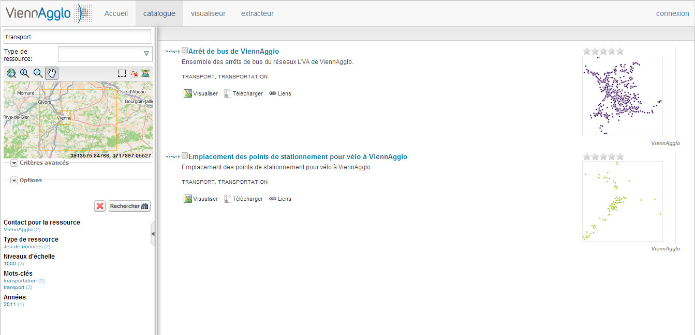
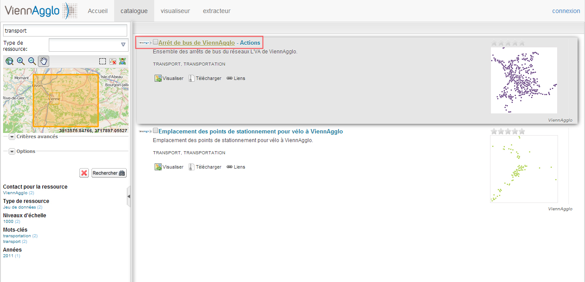

Connaître et exploiter le patrimoine de données – Niveau 1
Formation sur les fonctionnalités de base du catalogue et visualiseur
Objectifs visés par cette formation :
Rechercher l'existence d'une donnée via le catalogue, consulter et exporter sa fiche de métadonnées, la visualiser, la télécharger.
Ajouter une couche d'informations dans le visualiseur ( à partir du catalogue GeoViennAgglo, à partir d'un serveur OGC distant pré-enregistré ou non).
Manipuler une couche d'informations dans le visualiseur de GeoViennAgglo et utiliser les fonctionnalités de base (zoom, mesure, affichage/désaffichage de couches, ordre des couches, géolocalisation, impression, enregistrement de cartes, etc.).
PARTIE 1
Rechercher l'existence d'une donnée dans le catalogue
Ouvrir le catalogue de GeoViennAgglo :
À partir de la page d'accueil de GeoViennAgglo (http://geo.viennagglo.fr/). Bloc à gauche «Consulter – Catalogue GeoViennAgglo » :

Accès au catalogue de données de GeoViennAgglo
Interface du catalogue de GeoViennAgglo :

Pastille 1 : Fonctionnalité de recherche de données par mot(s)-clé(s),
Pastille 2 : Fonctionnalité de recherche de données par emprise géographique,
Pastille 3 : Fonctionnalités de recherche avancée,
Interface du catalogue de GeoViennAgglo :
Pastille 4 : Lancer la recherche - Pastille 5 : Mise en évidence des dernières métadonnées ajoutées ou mises à jour ,
Pastille 6 : Nuage de mots clés apparaissant fréquemment dans les fiches de métadonnées,
Pastille 7 : accès via login/mot de passe pour les partenaires identifiés.
Rechercher par mot(s)-clé(s) :

Exemple : mot-clé = transport
Rechercher par mot(s)-clé(s) (suite) :
Résultats = 2
Visualiser la fiche de métadonnées complète :
En cliquant sur le nom de la fiche :
On peut ainsi en ressortir toutes les informations nécessaires à l'exploitation des données (producteur, point de contact, généalogie, précision, conditions de diffusion, etc.).